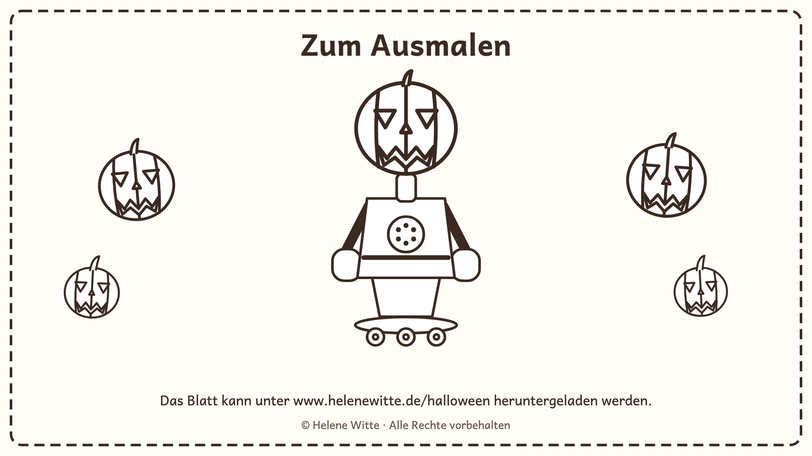

Zum Ausmalen: Ein Roboter zu Halloween
Der Roboter mit dem Kürbiskopf fährt auf seinem Skateboard, und vier Kürbislaternen warten darauf, bunt angemalt zu werden.
Das Blatt gibt es hier in zwei Fassungen: als Bild fürs Tablet oder Handy — und als PDF zum Ausdrucken auf einem A4-Blatt.

Ausmalblatt als Bild herunterladen (PNG)

Einfach ausdrucken — oder am Tablet mit einem Stift bunt ausmalen.
© 2026 Helene Witte · Alle Rechte vorbehalten. Zum Ausdrucken für Kinder zu Hause, im Kindergarten und in der Schule. Nicht zum Verkauf.
Der Film dazu
Ein kleiner Film zeigt die Bastelstunde im Kindergarten: Kürbisköpfe, Roboterarme und am Abend leuchtende Kürbisse am Fenster: Ein Roboter zu Halloween.
Die anderen Geschichten mit dem Roboter — Kindergarten, Schule, zu Hause, bei Oma und Weihnachten — stehen im Sammelband und auf den Seiten der einzelnen Bände.
Schreib mir gern, wie dir das Blatt gefällt: kontakt@helenewitte.de